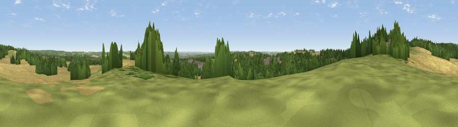

Viewpoint near Greasley
#31685 in England · top 51% of its area beats it · near GreasleyThe view, rendered

A 360° render of this exact spot computed from the terrain model, tree cover and land cover — summer colours, afternoon light, calibrated against photographs of famous viewpoints. Real trees, hedges and buildings will differ in detail.
The panorama
Grey silhouette: terrain skyline in each direction (720 bearings, Earth curvature and refraction included). Dashed green: skyline with trees (+15 m) and buildings (+8 m) as obstacles. Blue strip: how far the ground is visible on each bearing.
Where the view opens
Wedge length = distance to the farthest visible ground on that bearing (vegetation-aware). Rings at 10, 25 and 50 km.
What fills the view
37% cropland · 33% woodland · 18% grassland · 11% built-up
Angular shares of the visible panorama (visual magnitude), not map area. Landscape diversity 0.57 (0–1 Shannon).
Key numbers
More beautiful places nearby
The staircase of upgrades: each row has a higher view potential than everything closer. Driving times are estimates from straight-line distance, calibrated against real road routing — check an actual route before setting out.
| Place | Direction | Drive | Score |
|---|---|---|---|
| Beacon Hill | E · 1 km | ~2 min | 45.8 |
| Viewpoint near Hucknall | E · 1 km | ~3 min | 47.2 |
| Viewpoint near Greasley | WSW · 2 km | ~5 min | 56.2 |
| Viewpoint near Strelley | S · 8 km | ~16 min | 62.6 |
| Viewpoint near Arnold | ESE · 9 km | ~18 min | 64.1 |
| No Man's Lane | SSW · 13 km | ~24 min | 65.8 |
| The Tors | WNW · 17 km | ~29 min | 68.9 |
| Crich Stand | WNW · 17 km | ~30 min | 73.0 |
53.03744, -1.24273 · source: screening · position refined by local search. Computed location — check access rights before visiting.